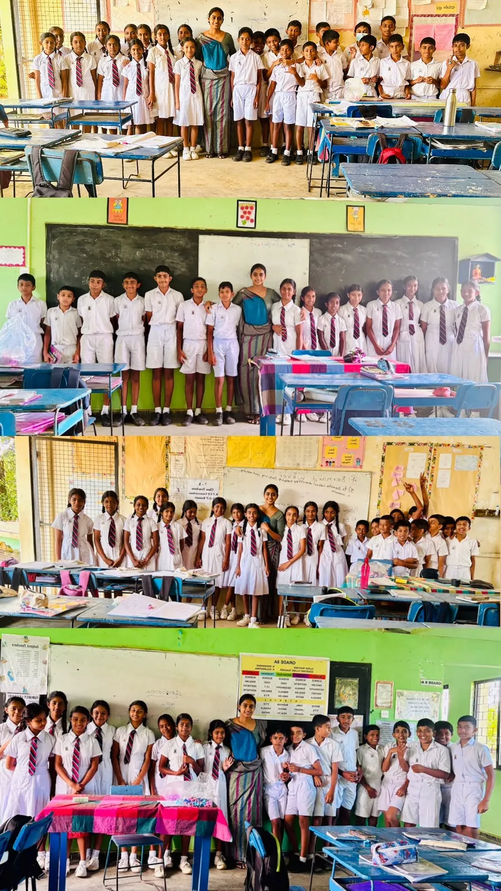
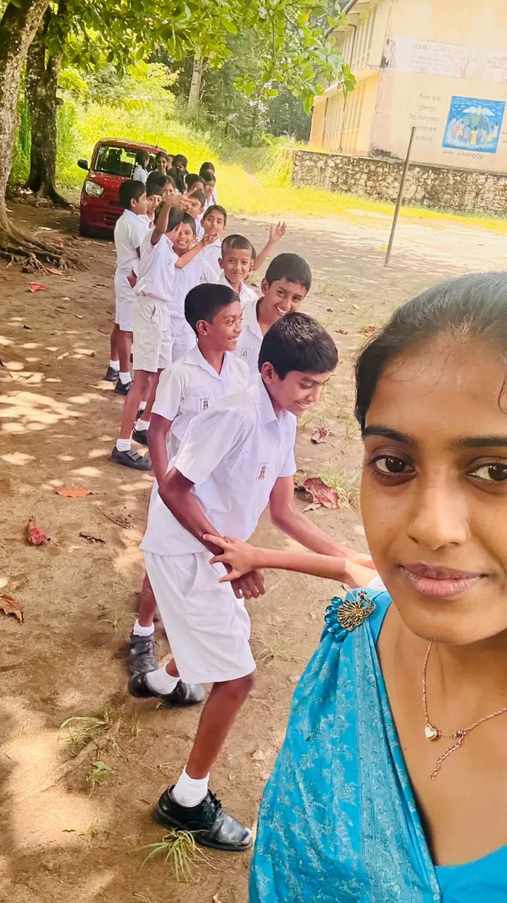
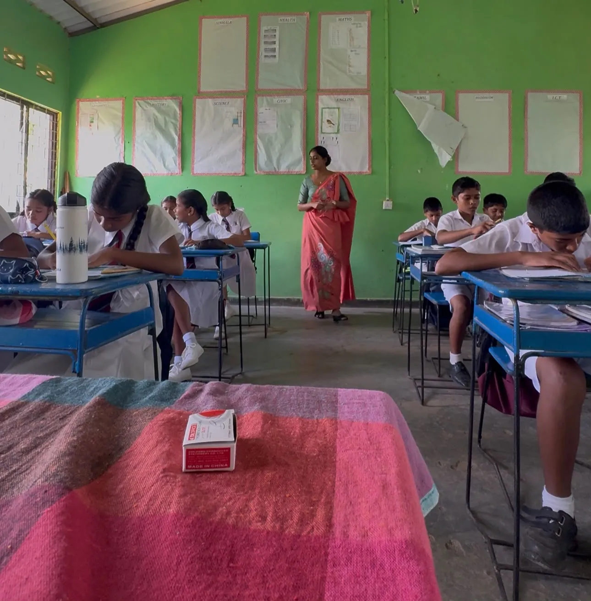
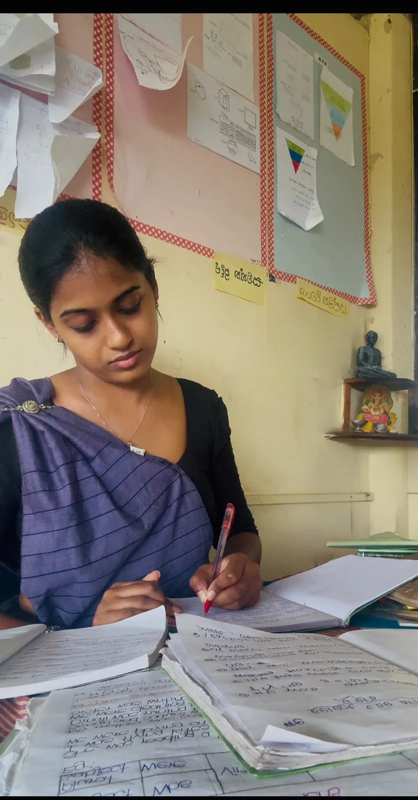
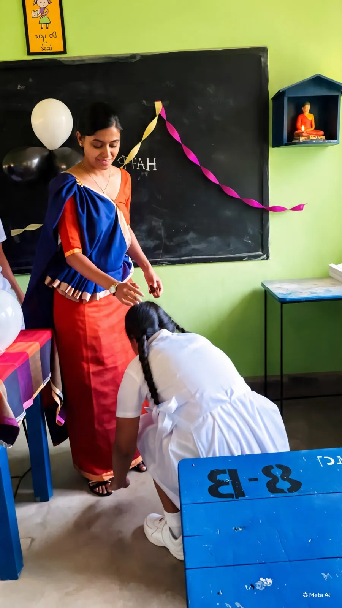
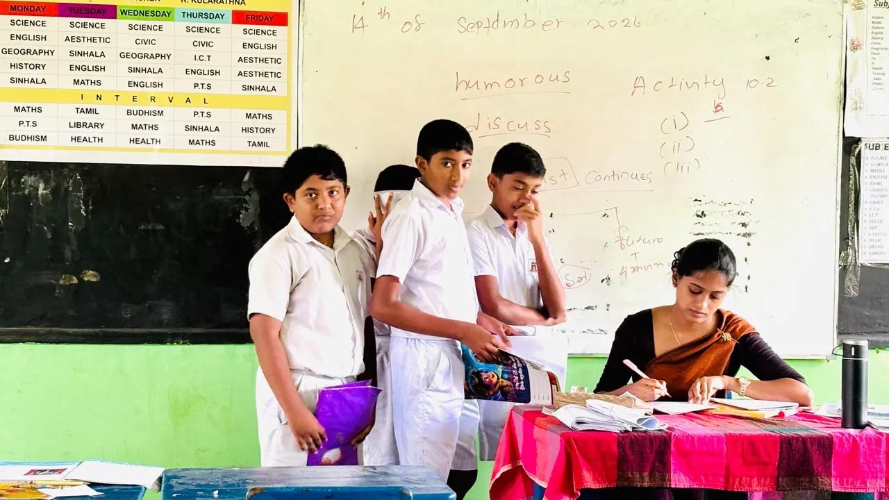

Teaching Philosophy Statement
“Every learner can progress when the classroom provides the right support, opportunity and confidence.”
I believe that teaching is more than transferring knowledge from a teacher to a learner. Effective teaching should create opportunities for learners to think, communicate, discover, practise, make mistakes and gradually become independent. Therefore, I view the teacher primarily as a facilitator, guide and motivator who creates the conditions necessary for meaningful learning.
My philosophy is strongly learner-centred. I believe students understand language more effectively when they actively participate rather than simply receive explanations. Vygotsky (1978) emphasises the importance of social interaction and support in learning. Therefore, I value pair work, group work, peer-assisted learning and scaffolding, where learners can develop understanding with support before performing independently. Guided discovery is also important in my teaching because learners should have opportunities to notice patterns and attempt explanations before the teacher provides the final rule (Thornbury, 1999).
I also believe that language learning should take place in a classroom where learners feel emotionally safe. Many learners hesitate to speak English because they fear making mistakes. Krashen’s (1982) Affective Filter Hypothesis suggests that anxiety and negative emotions can interfere with language acquisition. Therefore, I aim to create a friendly and encouraging atmosphere where mistakes are treated as a natural part of learning. Motivation is equally important, and Dörnyei and Ushioda (2011) highlight the significant role that classroom experiences and social relationships can play in learner motivation. For this reason, I value interactive activities, games, meaningful speaking opportunities and positive encouragement.
Another central belief in my philosophy is that learners are different. They learn at different speeds, possess different strengths and require different levels of support. Tomlinson (2014) explains the importance of responding to learner differences through differentiated instruction. I therefore believe that teachers should provide additional scaffolding for learners who need it while offering meaningful extension opportunities for learners who progress more quickly.
Assessment should also support learning rather than simply measure it. Black and Wiliam (1998) demonstrate the value of formative assessment in helping teachers understand learners’ progress and adjust instruction. I therefore value individual tasks, observation, questioning, peer checking, self-correction and feedback as part of everyday teaching.
Finally, I believe that no single method is suitable for every learner or classroom. Effective teachers continuously observe, reflect, receive feedback and adapt their practice. My goal is to create an inclusive, supportive and learner-centred classroom in which every student is given an opportunity to participate, improve and develop confidence in using English.

References
Black, P., & Wiliam, D. (1998). Assessment and classroom learning. Assessment in Education: Principles, Policy & Practice, 5(1), 7–74.
Dörnyei, Z., & Ushioda, E. (2011). Teaching and researching motivation (2nd ed.). Routledge.
Krashen, S. D. (1982). Principles and practice in second language acquisition. Pergamon Press.
Thornbury, S. (1999). How to teach grammar. Pearson Education.
Tomlinson, C. A. (2014). The differentiated classroom: Responding to the needs of all learners (2nd ed.). ASCD.
Vygotsky, L. S. (1978). Mind in society: The development of higher psychological processes. Harvard University Press.